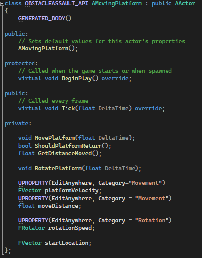
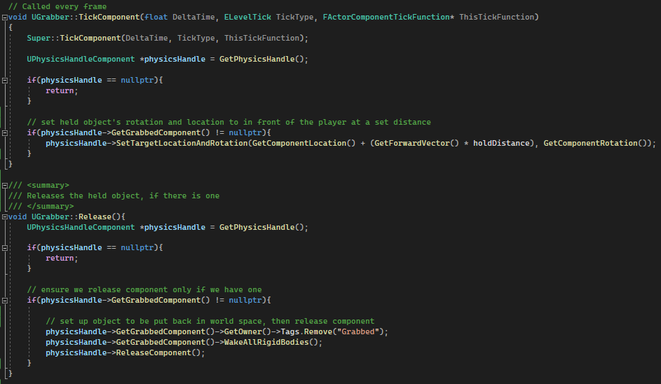
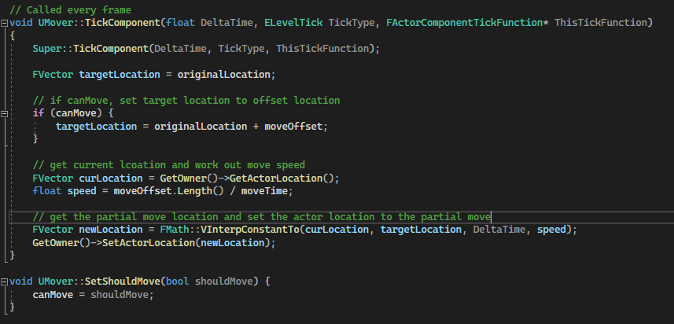
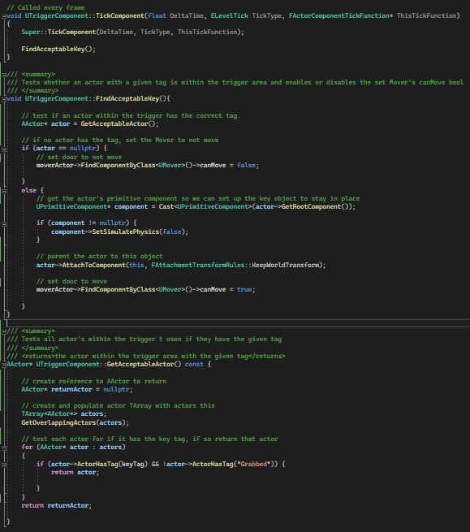

Overview
I have been developing my skills in using Unreal Engine and C++. To accomplish this, I have been following a Udemy course to aid in my learning (This course can be found here). For these projects, I used Unreal Engine Version 5.1.
Within this course, I have created 3 different game demos. These being Warehouse Wreckage, Obstacle Assult, and Crypt Raider, with the complexity of these projects increasing after each. These games focus on developing my understanding of different aspects of working in Unreal Engine and C++. After developing each of these games, I then proceeded to test my knowledge by adding my own mechanic to each game, whilst also improving the tutorial code where possible. I did this so that I could develop better knowledge of using C++, resulting in me having a much greater understanding of how to use it.
The projects I have made:
Warehouse Wreckage is a first-person destruction game where the player can run around shooting different environmental items to knock them over.
Some examples of these items are cones, barrels, shelves, and more. The player then has access to restart the level as many times as they want.
I created this game with a focus on learning Unreal Engine's basic features, including getting a good understanding of how to use blueprints to
perform simple tasks.
What I focused on whilst making this:
During this project I focused on improving my basic in-engine skills. This included how to properly make use of the viewport, moving/placing actors, BSP, basic Blueprint usage, and more. Within this game, I used Blueprints to spawn in objects, shoot out projectiles, and manage the scene. This project used the default Unreal Engine player controller.
Example Systems + Scripts
Level Blueprint

Above is the main level Blueprint responsible for spawning in a projectile and firing it in a forward direction.
The top section takes any input from the backspace key and calls the ReloadLevel function when this key is pressed. This function gets the
current level name and then passes this into an "OpenLevel(by name)" node, resulting in the level reloading.
The bottom section is responsible for spawning a projectile when the spacebar key in pressed. This blueprint uses a branch so that when the
space bar key is pressed, it checks if it has ammo and either spawns in a new projectile or reloads the gun, calling the relevant functions
to do so.
Spawn Projectile Function
The Spawn Projectile function is responsible for spawning in a new projectile into the level and ensuring an impulse is applied upon this creation. When called, this function spawns in a new projectile, ensuring the rotation and position is taken from the player pawn, and then calls the add impulse function, passing this new projectile as a target reference.
Add Impulse Function
When called, this function gets an actor and applies an impulse force in the forward direction with a given amount of force.
Decrease Ammo Function
When called, this function lowers the ammo count by one
Overview:
Completing this blueprint system and combining it with Unreal Engine's other built-in features have been able to give me a great understanding of the basic functionaility of this engine and how to make good use of it.
Obstacle Assault is a third-person parkour game where the player has to use their environment in order to progress on throughout the level. Some different environmental features includes moving platforms, rotating platforms, and jumping puzzles. I created this game with a focus on learning basic C++ usage for scripts in Unreal Engine, and how I can use these scripts to manipulate the environment during play time.
What I focused on whilst making this:
During this project, I focused on learning basic C++ usage in Unreal. This included learning how to manipulate an actor's movement and rotation during run time. The script I made was a configurable C++ script that allowed the user to make an actor move to and from a given distance and direction, whilst also allowing them to configure it to have a rotation. I also looked into creating C++ actors, Unreal Engine's live coding feature, and linking blueprint to C++.
Example Systems + Scripts
Above is an image of spinner object. I made these yellow discs rotate clockwise to make it more difficult for the player to naviagte the terrain
Above is an image containing two types of moving blocks. The stone block on the right moves up and down to allow the player access to higher ground, meanwhile the purple cubes move side to side to provide an obstacle to the player as they move on within the level.
MovingPlatform.h
Above is the header file for the MovingPlatform script. I ensured to categorize and allow the main variables to be edited within the editor so that the settings can be customized for different objects.
MovingPlatform.cpp
Above is the main C++ script that handles moving and rotating an actor. Every tick this script calls 2 functions: MovePlatform() and RotatePlatform(),
passing DeltaTime into these so it can be used for calculations.
The MovePlatform() function applies a movement to the actor in a preset direction and speed. It functions through checking if the actor has reached
it's destination, in which if it has, it will reset it's start location and send the actor back in the direction it came from. However, If the actor
hasn't reached it's destination, the actor will be moved towards it's destination.
The RotatePlatform() function applies a local rotation to the actor by a preset rotationSpeed value.
Overview:
Completing this C++ system and implementing it into Unreal Engine has helped me develop an understanding of how C++ scripts function, and how I
can use them to manipulate actors throughout the scene. From doing this project, I have learnt how to create, add functionality to, and set up
c++ scripts so they can function within an Unreal Engine project.
I plan to come back to this project in the future to add greater functionality and ideas I have to make the gameplay much more enjoyable and to
add more depth to the gameplay loop.
Crypt Raider is a first-person puzzle game where the player can run around and interact with different objects throughout the environment to help them progress through the level and get to the end. I created this game with a focus on obtaining a greater understanding of C++ and how I can use this language to create some more advanced behaviours for my game. I also took my time whislt working on this project to look into Unreal Engine's lighting system, including UE5's new Lumen lighting system.
What I focused on whilst making this:
During this project, I focused on better understanding C++. This included things such as pointers and references, actor and scene components, header files, and more. In this project I make a few different C++ scripts, including a script to allow the player to pick up objects in the environment, a script that allowed an object to move a given distance in a given direction when set to move, and a custom trigger component that worked with the mover script to allow for me to implement puzzles into the map.
Example Systems + Scripts
The above picture is before I put the gargoyle key on the podium, meaning the hidden wall was still up
This picture shows the gargoyle on the podium, meaning the hidden wall has been lowered due to the key being in place
Grabber.cpp
The two images below make up the Grabber component. This script is responsible for enabling the player to pickup and drop objects around the map.

As seen above, every tick we check if we have an object held within the physics handle and ensure we hold the object infront of the player.
Above is also the Release Function. This function is responsible for releasing any held object so that the player can drop a held object
in a place they want. Firstly, I get a reference to the physics handle to get the grabbed component so I can reset it and remove the "Grabbed"
tag. I then call the ReleaseComponent() function within the physics handle. After this, the object will be in world space, letting the player
leave it where they choose.
Above is the Grab, PickupItemInReach, and GetPhysicsHandle functions. The Grab function is responsible for picking up an object and setting it
up for being carried. Firstly, I get a reference to the physics handle so I can reference this later, and create a FHitResult variable to hold
objects the player is looking at within the scene. I then check if there is an item within reach through calling the PickupItemInReach function.
If an item is found, I get this hit object's primitive component and set it up for being carried by the player, ensuring to give it the "Grabbed"
tag and detatching it from it's parent object if it has one. I then call the GrabComponentAtLocationWithRotation from the physics handle, passing
this hitComponent.
The PickupItemInReach is a function that sends out a sweep and returns a boolean value depending on whether an object that can be picked up has
been found, using a sphere as it's collision shape. Finally, the GetPhysicsHandle function simply returns the object's physics handle component.
Mover.cpp
The script above is the script responsible for moving an object in a given direction and speed, provided it has been set to be able to move. The script functions through the main TickComponent function. It works through assigning a target location and then applying a move to this location if the component is set to move. After this, I then get the movement through using VInterConstantTo from FMath, passing in a calculated speed, the object's current location, and the target location. Finally, I pass this calculated movement into the SetActorLocation function of the owner object.
I also make use of a public SetShouldMove function, so that other components can set this value easily.
TriggerComponent.cpp

The script above is the TriggerComponent script. This is a custom trigger object that activates a mover, provided a given key is present within
the trigger area.
This script functions through calling the FindAcceptableKey each tick. This function is responsible for setting the canMove value in a preset
Mover to either true or false, depending on whether the correct key is present. Firstly, the GetAcceptableActor function is called to obtain
an actor with the correct tag, in which if one isn't found, the mover is set to not move. Alternatively, if an actor is found with the correct
key as it's tag, the object is set up to remain in the location it was dropped and is parented to this object. Then, finally, the Mover object's
canMove bool is set to true, since the correct key has been placed into the trigger area.
The GetAcceptableActor function returns an actor within the trigger area, provided it has the correct tag. Firstly, I create a TArray of actors
and pass this into the GetOverlappingActors function, then I filter through each actor found and check whether it has the correct key tag, in
which if it does I return this actor to where it was called. If no actor is found with the given key, a nullptr is returned.
Overview: